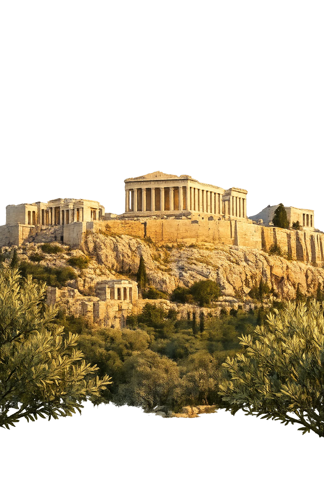
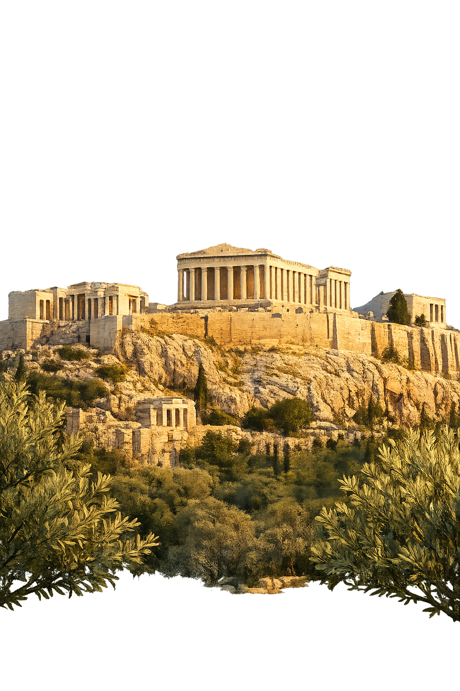

Unicode restoration and ASCII comparison
Ἀθῆναι
The name in its original Greek form. Athēnai (Ἀθῆναι) is attested in the source tradition — “Of Athena”. Its aspirated consonants, diphthongs, long vowels, and acute accents carry the full phonetic and orthographic weight of the source tradition.
athenai
Reduced to plain athenai, the name loses everything that made it specific: aspirated consonants, diphthongs, long vowels, and acute accents. What remains is an ASCII string that machines can parse but that no longer speaks with its original voice.
Athēnai
The Unicode restoration recovers what ASCII flattened. Athēnai restores aspirated consonants, diphthongs, long vowels, and acute accents, returning the name to its original written dignity. The domain encodes to Punycode, but the browser displays the truth.
Athēnai.com → xn--athnai-r3a.com
The non-ASCII characters in Athēnai are encoded while the ASCII remains visible. To the DNS, it is Punycode. To humanity, it is Athēnai.
How Athēnai travels from ancient script to the modern URL
Greek Ἀθῆναι; the plural toponym of Athens, named after the goddess Athena.
City of Wisdom
The Unicode restoration Athēnai preserves Greek stress and length; the ASCII form athenai loses these features.
Owned, ideal, and ASCII forms of Athēnai
Athēnai
Restores Ἀθῆναι. The live temple domain — athēnai.com.
athenai
Flattens Ἀθῆναι. The plain ASCII fallback — what DNS and legacy systems see.
How Athēnai was spoken
Wisdom · Democracy · Sacred Polis
Athēnai is not merely a place on the map; it is the city that gave the West the vocabulary of citizenship, philosophy, and ordered public speech. Nestled between the Acropolis and the Piraeus, it was a polis whose gods, assemblies, and festivals turned a limestone outcrop into the symbolic home of wisdom.
Athena's sacred rock, crowned by the Parthenon, the treasury of the Delian League and a temple to the maiden goddess.
Athena's bird, stamped on tetradrachms and carved into the city's identity, became an emblem of learning and vigilance.
The open square where citizens debated law, ostracized tyrants, and practiced the democracy that bore the city's name.
The fortified corridor to the Piraeus and the trireme fleet made Athēnai a maritime power and an imperial democracy.
Stories of Athēnai
Athenai is not merely a city; it is a mythic body shaped by gods, kings, and heroes. Its foundation stories explain why Athena's olive tree outranked Poseidon's salt spring, why its earliest kings were said to be born from the earth itself, and why the city became the seat of wisdom, craft, and collective rule.
Athena and Poseidon both desired to become patron of the city. Poseidon struck the Acropolis with his trident and produced a salt spring; Athena planted the first olive tree. King Cecrops judged the contest in Athena's favour, for the olive gave wood, oil, and food. Poseidon raged and flooded the Thriasian plain, but the city took Athena's name and her tree was honoured on the citadel.
Cecrops, the first king of Athenai, was said to be born from the earth itself — half-man, half-snake. His successors, including Erechtheus, continued the claim that the Athenians were autochthonous, sprung from their own soil rather than imported by conquest. This myth of native origin supported the city's pride in equality and civic continuity.
When Eumolpus and the Eleusinians threatened Attica, the oracle declared that Athenai would be saved only if King Erechtheus sacrificed one of his daughters. He did so, and the invaders were driven back. Erechtheus himself was destroyed by Poseidon's trident and was swallowed into the earth beside the temple of Athena, becoming a hero-chthonic power of the city.
The hero Theseus unified the independent demes of Attica into a single political community centred on Athenai. This act, the synoikismos, transformed a cluster of villages into a city-state. In myth it mirrors the later democratic ideal: many parts voluntarily joined into one polis under the protection of Athena.
The lore you have read is the surface — the living myth. Beneath it lies the scholarship: etymology, reconstructed pronunciation, Unicode character breakdown, and the cultural legacy of Athēnai.
Enter Extended Lore